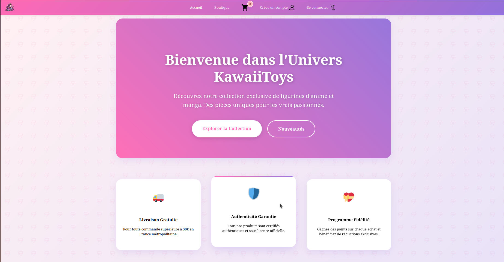
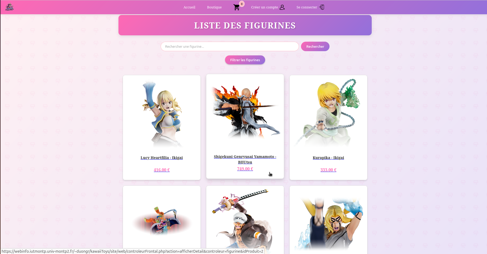
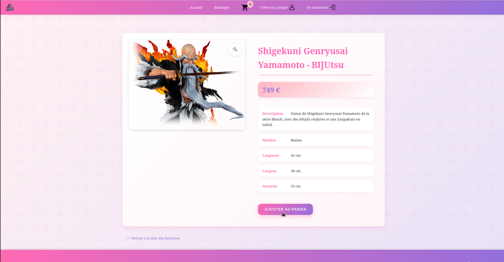
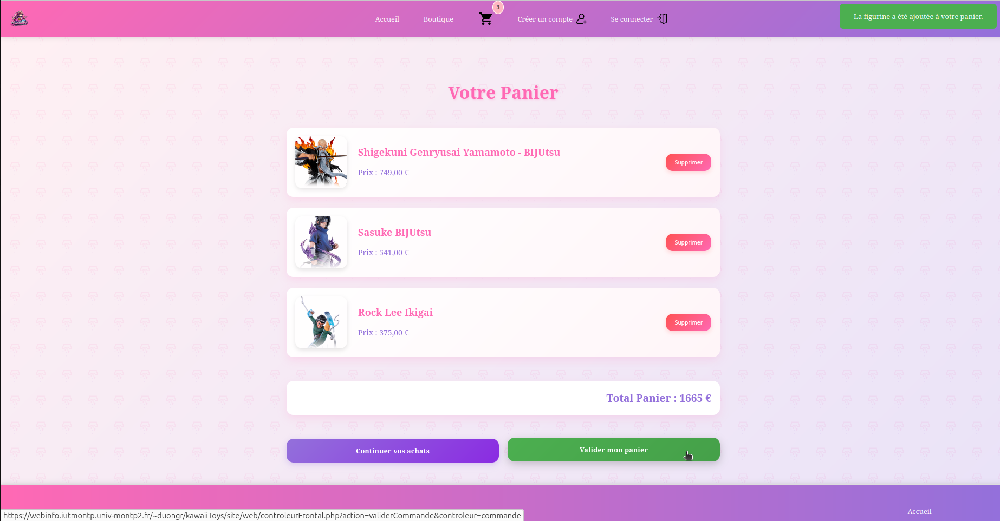

Développement d'une application web e-commerce complète utilisant l'architecture MVC.
Le projet comprend la gestion des commandes, la sécurisation des formulaires et une base de données SQL.
Technologies utilisées
PHP (Architecture MVC)
MySQL
HTML/CSS/JavaScript
Bootstrap




Apprentissages
Compétences développées
Maîtrise du pattern MVC en PHP
Sécurisation des données et gestion des sessions
Conception et optimisation de bases de données SQL
Développement d'interfaces utilisateur responsives